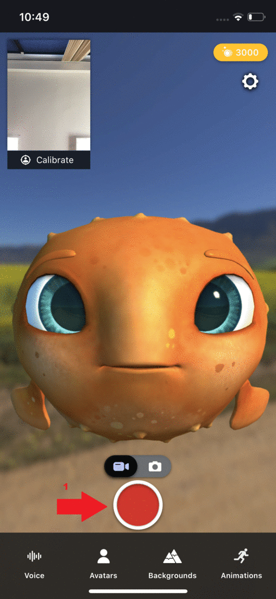

Animaze iPhone: How do I take screen captures and videos?

1. To take screen captures tap on the the toggle button and select .
2. Tap on the 
3. Tap on the toggle button and select .
4. Tap on to record a video.
-
PRO TIP: You can reposition and move your avatar while recording.